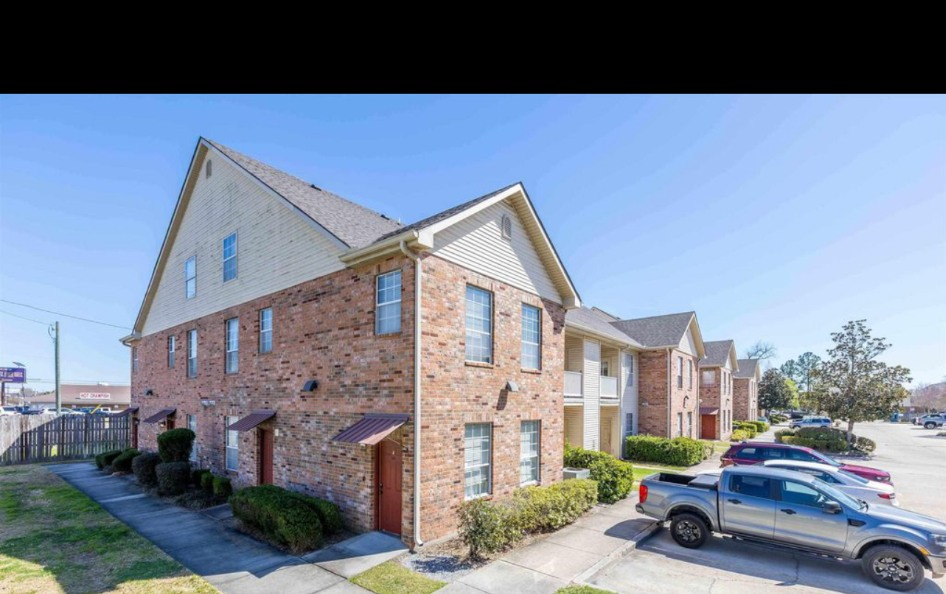

My First Rental Property
I bought my first investment property at 20. Beyond the financial results, it taught me that ownership means handling the unexpected and taking responsibility for the people and the place.
What I learned +
The numbers on paper never tell the whole story. Toilets clog, appliances fail, sinks leak, walls need repairs, and unexpected expenses are part of the job. I've learned that staying calm, assessing the problem, and finding a practical solution matters more than getting frustrated.
I've also learned that tenant relationships require balance. I may own the property, but it's someone else's home. I want tenants to feel comfortable and respected while also making sure the property is maintained and expectations are clear. Navigating that balance taught me a lot about communication, human nature, and long-term relationships.